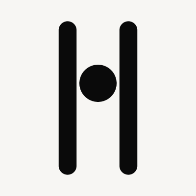
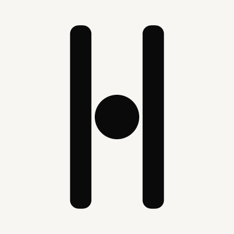
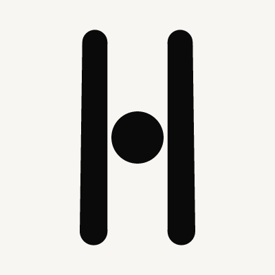
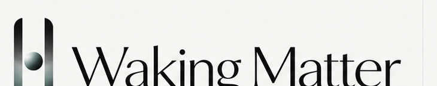
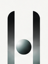

Independent review: the last sheet was a real checkpoint, but no candidate won both Direction 04 fidelity and the not-a-corporate-H test. Flare was too far from 04. Source was the honest silhouette and still a one-colour H. This sheet is the smallest next move: three deltas off Source, nothing else. Throat, High, Catch, chrome, and the 62% Flare stay out. Production masters unchanged.


Parallel members. Pillar 11, gap 26.2, orb r 11.4 (87% fill), height 94. Same numbers as Source. Each cut moves one thing.
Fraunces, opsz 144, SOFT 0. Review already noted it pairs with Source best. Type is not frozen.
Identical members and orb. Only the sphere moves to cy 51 — suspended, not a crossbar.
Identical occupancy. Terminals rx 0.4 × width — between half-pill and Tablet brick.
Inner slit parallel. Outer foot +10%, not Flare’s +62%. Occupancy otherwise Source.



| 04 fidelity | Not a corporate H | 16 / 32 | Both? | |
|---|---|---|---|---|
| Source (law) | Pass — the silhouette | Fail — one-colour crossbar | H | No |
| 1 Raised | Pass — occupancy unchanged | Moves it at 400px. Still an H at 16. | High bar, still a letter | No |
| 2 Worn | Pass — occupancy unchanged | Fail — centred orb is still the bar | H | No |
| 3 Optical Flare | Pass — parallel slit, 04 fill | Fail — 10% foot is an optical hint | H | No |
Raised is the only cut that materially moves the H-bar without leaving Source occupancy. At 400px the orb is an object in a doorway. At 16px it is still a letter with a high bar. That is not a freeze.
Worn and Optical Flare stay one-colour H’s with a detail — the same class of hint independent review already rejected in Asym. Do not pick them to have a winner.
Type stays Fraunces at display optical, unfrozen. Production
brand/logos/ unchanged. Phase B held. Stop here.
Independent re-review of this three-cut sheet is the gate.